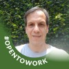

Portifólio
Índice
Fábio Venâncio de Almeida

Descrição
Sou casado, tenho dois filhos e uma esposa com quem estou casado a mais de
26 anos.
Nasci no dia 13 de outbro de 1967, minha nascionalidade é
Brasileira.
Meu endereço é na rua José Maria Pinto Zilli, 762. no município de
São Paulo, estado São Paulo.
Habilidades
- Falar em púbico
- Ouvir as pessoas
- Trabalhar em equipe
- Entender o que o outro sente
Início da página